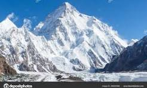
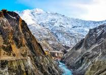

| It’s hard to imagine a more magnificent landscape than the rugged peaks, hidden villages than the rugged peaks, hidden villages and wind-swept plains of Pakistan. Here are 20 of the most beautiful places in Pakistan, from wild mountain passes and unreal lakes, to ornate mosques and ancient fortresses. Thanks to Samantha for sharing her Pakistan tips. Samantha is a self-proclaimed South Asia addict and hippopotamus lover who’s been on the road for seven months so far. She blogs about her indefinite budget-backpacking adventure at Intentional Detours, where she shares guides and stories to help and inspire you to visit offbeat places, too. Please note: This post contains affiliate links, meaning I may earn a commission if you make a purchase by clicking a link (at no extra cost to you). Learn more. Western media might try to tell you otherwise, but trust me – Pakistan is an absolutely stunning country. Think famous mountain peaks, emerald-green and turquoise-blue valleys, deserts filled with remnants of ancient civilization… And that’s not even the half of it. One thing’s for sure: Pakistan sure isn’t lacking in beautiful places to visit | RECENTLY PUBLISHED A Hand-Picked List of the Best Restaurants in Kazbegi, Georgia A Detailed Guide to the Juta Hike: How to Visit the ‘Georgian Dolomites’ Near Kazbegi 8 Epic Day Trips From Kazbegi, Georgia: Options for Hikers & Non-Hikers A Short Guide to Khvamli Mountain, the Best Day Hike Near Kutaisi One-Week Azerbaijan Itinerary: How to Spend 7 Days in the Land of Fire |
Attabad valley
Attabad Lake, formed after a landslide in 2010, holds significance as a breathtaking turquoise gem in Hunza. Its importance lies in offering not only stunning views but also recreational opportunities such as boat rides, making it a unique and must-visit destination. Best time to visit: May to October |
badshahi mosque In the heart of Lahore, the Lahore Fort and Badshahi Mosque are architectural wonders from the Mughal era. Their importance lies in preserving the rich history of the region and showcasing the intricate design and grandeur of Mughal architecture.
Best time to visit: October to March
In the heart of Lahore, the Lahore Fort and Badshahi Mosque are architectural wonders from the Mughal era. Their importance lies in preserving the rich history of the region and showcasing the intricate design and grandeur of Mughal architecture.
Best time to visit: October to March
|
fairy meadows Fairy Meadows, situated at the base of Nanga Parbat, stands as a celestial haven for nature enthusiasts and adventure seekers. Its significance lies in the unparalleled views it offers of the world’s ninth-highest mountain, creating an awe-inspiring backdrop for trekkers and photographers. The meadows, adorned with vibrant wildflowers during the warmer months, add a touch of enchantment to this pristine destination.
Best time to visit: June to August
Fairy Meadows, situated at the base of Nanga Parbat, stands as a celestial haven for nature enthusiasts and adventure seekers. Its significance lies in the unparalleled views it offers of the world’s ninth-highest mountain, creating an awe-inspiring backdrop for trekkers and photographers. The meadows, adorned with vibrant wildflowers during the warmer months, add a touch of enchantment to this pristine destination.
Best time to visit: June to August
|
hunza valley Hunza Valley, a jewel in the crown of Gilgit-Baltistan, is a destination of immense cultural and natural importance. The valley is not merely a geographical wonder surrounded by snow-capped peaks but a vibrant hub of history and tradition. The ancient Baltit Fort and the serene Attabad Lake contribute to the valley’s allure, making it a must-visit for those seeking a blend of culture and breathtaking landscapes.
Best time to visit: May to October
Hunza Valley, a jewel in the crown of Gilgit-Baltistan, is a destination of immense cultural and natural importance. The valley is not merely a geographical wonder surrounded by snow-capped peaks but a vibrant hub of history and tradition. The ancient Baltit Fort and the serene Attabad Lake contribute to the valley’s allure, making it a must-visit for those seeking a blend of culture and breathtaking landscapes.
Best time to visit: May to October
|
quaid e azam tomb Mazar-e-Quaid (Urdu: مزارِ قائد), also known as Jinnah Mausoleum or the National Mausoleum, is the final resting place of Muhammad Ali Jinnah, the founder of Pakistan. Designed in a 1960s modernist style, it was completed in 1971, and is an iconic symbol of Karachi as well as one of the most popular tourist sites in the city.[1] The mausoleum complex also contains the tomb of Jinnah's sister, Māder-e Millat ("Mother of the Nation") Fatima Jinnah, as well as those of Liaquat Ali Khan and Nurul Amin, the first and eighth Prime Ministers of Pakistan respectively. The tomb of Sardar Abdur Rab Nishtar, a stalwart of the Muslim League from Peshawar, is also located there.
Mazar-e-Quaid (Urdu: مزارِ قائد), also known as Jinnah Mausoleum or the National Mausoleum, is the final resting place of Muhammad Ali Jinnah, the founder of Pakistan. Designed in a 1960s modernist style, it was completed in 1971, and is an iconic symbol of Karachi as well as one of the most popular tourist sites in the city.[1] The mausoleum complex also contains the tomb of Jinnah's sister, Māder-e Millat ("Mother of the Nation") Fatima Jinnah, as well as those of Liaquat Ali Khan and Nurul Amin, the first and eighth Prime Ministers of Pakistan respectively. The tomb of Sardar Abdur Rab Nishtar, a stalwart of the Muslim League from Peshawar, is also located there.
|
faisal mosque Faisal Mosque is the mosque in Islamabad, Pakistan. Located on the foothills of Margalla Hills in Islamabad, the mosque features a contemporary design consisting of eight sides of concrete shell and is inspired by a Bedouin tent.
Faisal Mosque is the mosque in Islamabad, Pakistan. Located on the foothills of Margalla Hills in Islamabad, the mosque features a contemporary design consisting of eight sides of concrete shell and is inspired by a Bedouin tent.
|
k2 K2, the world’s second highest peak (28,251 feet [8,611 metres]), second only to Mount Everest. K2 is located in the Karakoram Range and lies partly in a Chinese-administered enclave of the Kashmir region within the Uygur Autonomous Region of Xinjiang, China, and partly in the Gilgit-Baltistan portion of Kashmir under the administration of Pakistan. K2 The glacier- and snow-covered mountain rises from its base at about 15,000 feet (4,570 metres) on the Godwin Austen Glacier, a tributary of the Baltoro Glacier. The mountain was discovered in 1856 by Col. T.G. Montgomerie of the Survey of India, and it was given the symbol K2 because it was the second peak measured in the Karakoram Range. The name Mount Godwin Austen is for the peak’s first surveyor, Col. H.H. Godwin Austen, a 19th-century English geographer. |
kaghan valley Kaghan Valley, in the Khyber Pakhtunkhwa province, holds importance as a picturesque destination with lush greenery, snow-capped peaks, and gushing rivers. Saif-ul-Mulook Lake and Shogran stand out as key attractions, making the valley a favorite among nature enthusiasts and adventure seekers.
Best time to visit: June to Septembe
Kaghan Valley, in the Khyber Pakhtunkhwa province, holds importance as a picturesque destination with lush greenery, snow-capped peaks, and gushing rivers. Saif-ul-Mulook Lake and Shogran stand out as key attractions, making the valley a favorite among nature enthusiasts and adventure seekers.
Best time to visit: June to Septembe
|
karimabad Surrounded by towering peaks, including Rakaposhi and Ultar Sar, Karimabad in Gilgit-Baltistan is a cultural hub with historical sites like the ancient Baltit Fort and Altit Fort. Its significance lies in its vibrant local culture and historical landmarks, providing visitors with a rich tapestry of experiences. Best time to visit: May to October |
kund mair beach Kund Malir is a beach in Balochistan, Pakistan located in Hingol National Park. It is located about 150 kilometres (93 mi) from Zero-Point on Makran Coastal Highway.[2] Hingol National Park is the largest national park in Pakistan. It is located 236.8 kilometres (147.1 mi) west of Karachi, the largest city of Pakistan.[3][4] The drive between Kund Malir and Ormara is known for being scenic, and traverses a rural part of the country. There are estimated to be 11 active mud volcanoes in Kund Malir.[citation needed]
After passing Zero Point, there are no food or fuel facilities available on the route. Kund Malir is considered to be one of the most beautiful beaches in this world.[5] Due to increase in tourism, some of the mobile networks, including Ufone, have established service to provide coverage in this rural region. Several tour companies have expanded their services to help people access and explore this region. Kund Malir is a popular weekend picnic and daytrip destination for people from Karachi and interior Sindh. The site is unique and offers sweeping views of the mountains, ocean, and desert.
Kund Malir is a beach in Balochistan, Pakistan located in Hingol National Park. It is located about 150 kilometres (93 mi) from Zero-Point on Makran Coastal Highway.[2] Hingol National Park is the largest national park in Pakistan. It is located 236.8 kilometres (147.1 mi) west of Karachi, the largest city of Pakistan.[3][4] The drive between Kund Malir and Ormara is known for being scenic, and traverses a rural part of the country. There are estimated to be 11 active mud volcanoes in Kund Malir.[citation needed]
After passing Zero Point, there are no food or fuel facilities available on the route. Kund Malir is considered to be one of the most beautiful beaches in this world.[5] Due to increase in tourism, some of the mobile networks, including Ufone, have established service to provide coverage in this rural region. Several tour companies have expanded their services to help people access and explore this region. Kund Malir is a popular weekend picnic and daytrip destination for people from Karachi and interior Sindh. The site is unique and offers sweeping views of the mountains, ocean, and desert.
|
mikli necropiols Makli Necropolis (Urdu: مکلی کا شہرِ خموشاں; Sindhi: مڪلي جو مقام) is one of the largest funerary sites in the world, spread over an area of 10 kilometres near the city of Thatta, in the Pakistani province of Sindh. The site houses approximately 500,000 to 1 million[1] tombs built over the course of a 400-year period.[2] Makli Necropolis features several large funerary monuments belonging to royalty, various Sufi saints, and esteemed scholars. The site was inscribed as a UNESCO World Heritage Site in 1981 as an "outstanding testament" to Sindhi civilization between the 14th and 18th centuries.[3]
Nizam al-Din Tomb, Makli Hill, Sindh.
Makli Necropolis (Urdu: مکلی کا شہرِ خموشاں; Sindhi: مڪلي جو مقام) is one of the largest funerary sites in the world, spread over an area of 10 kilometres near the city of Thatta, in the Pakistani province of Sindh. The site houses approximately 500,000 to 1 million[1] tombs built over the course of a 400-year period.[2] Makli Necropolis features several large funerary monuments belonging to royalty, various Sufi saints, and esteemed scholars. The site was inscribed as a UNESCO World Heritage Site in 1981 as an "outstanding testament" to Sindhi civilization between the 14th and 18th centuries.[3]
Nizam al-Din Tomb, Makli Hill, Sindh.
|
mohen jo daro Mohenjo-Daro, an archaeological marvel in Sindh, dates back to the Bronze Age, showcasing one of the world’s oldest urban settlements. Its significance lies in preserving the architectural brilliance of the ancient Indus Valley Civilization, allowing visitors to step back in time and witness the foundations of urban living.
Best time to visit: November to March
Mohenjo-Daro, an archaeological marvel in Sindh, dates back to the Bronze Age, showcasing one of the world’s oldest urban settlements. Its significance lies in preserving the architectural brilliance of the ancient Indus Valley Civilization, allowing visitors to step back in time and witness the foundations of urban living.
Best time to visit: November to March
|
naltar valley The Naltar Valley is a valley situated about 34 kilometres (21 miles) from the city of Gilgit in Gilgit-Baltistan, Pakistan.[1] It is a forested area distinguished by its three lakes, Strangi Lake, Blue Lake, and Bodlok Lake, as well as by the mountainous landscape.
The Naltar Valley is a valley situated about 34 kilometres (21 miles) from the city of Gilgit in Gilgit-Baltistan, Pakistan.[1] It is a forested area distinguished by its three lakes, Strangi Lake, Blue Lake, and Bodlok Lake, as well as by the mountainous landscape.
|
ratti gali lake Nestled in the Neelum Valley, Ratti Gali Lake is a serene alpine lake surrounded by meadows and snow-capped peaks. The trek to this hidden gem is rewarded with panoramic views of the Himalayas, adding to the lake’s importance as a trekker’s paradise.
Best time to visit: June to August
Nestled in the Neelum Valley, Ratti Gali Lake is a serene alpine lake surrounded by meadows and snow-capped peaks. The trek to this hidden gem is rewarded with panoramic views of the Himalayas, adding to the lake’s importance as a trekker’s paradise.
Best time to visit: June to August
|
hingo national park Hingol National Park in Balochistan is the largest national park in Pakistan, and its importance lies in its diverse wildlife and unique rock formations. The park’s rugged landscapes and the mystical Mud Volcano add to its allure, making it a must-visit for nature enthusiasts.
Best time to visit: November to March
Hingol National Park in Balochistan is the largest national park in Pakistan, and its importance lies in its diverse wildlife and unique rock formations. The park’s rugged landscapes and the mystical Mud Volcano add to its allure, making it a must-visit for nature enthusiasts.
Best time to visit: November to March
|
Swat Known as the “Switzerland of Pakistan,” Swat Valley’s significance lies in its lush meadows, alpine forests, and gushing rivers. Beyond its natural beauty, Swat Valley is a historical and cultural treasure trove, with Malam Jabba’s ski resort and Mingora standing out as key attractions.
Best time to visit: May to July
Known as the “Switzerland of Pakistan,” Swat Valley’s significance lies in its lush meadows, alpine forests, and gushing rivers. Beyond its natural beauty, Swat Valley is a historical and cultural treasure trove, with Malam Jabba’s ski resort and Mingora standing out as key attractions.
Best time to visit: May to July
|
shangrilla resort Nestled in the picturesque landscapes of Skardu, Shangrila Resort is an oasis of tranquility. The resort’s importance lies in its serene lakeside location, particularly the unique Lower Kachura Lake. Offering a peaceful retreat with breathtaking views of the surrounding mountains, Shangrila Resort beckons travelers seeking solace amidst nature’s beauty.
Best time to visit: April to October
Nestled in the picturesque landscapes of Skardu, Shangrila Resort is an oasis of tranquility. The resort’s importance lies in its serene lakeside location, particularly the unique Lower Kachura Lake. Offering a peaceful retreat with breathtaking views of the surrounding mountains, Shangrila Resort beckons travelers seeking solace amidst nature’s beauty.
Best time to visit: April to October
|
skardo valley Skardu, often referred to as the gateway to some of the world’s highest peaks, holds immense importance for mountaineers and nature enthusiasts. Surrounded by dramatic mountain ranges and adorned with the serene Lower Kachura Lake, Skardu offers an ideal base for exploring the beauty of Gilgit-Baltistan.
Best time to visit: April to October
Skardu, often referred to as the gateway to some of the world’s highest peaks, holds immense importance for mountaineers and nature enthusiasts. Surrounded by dramatic mountain ranges and adorned with the serene Lower Kachura Lake, Skardu offers an ideal base for exploring the beauty of Gilgit-Baltistan.
Best time to visit: April to October
|
Best Diplomats having its headquarters
in New York is a Diplomatic Simulation Organizer dedicated
to inculcating the skills of Diplomacy among Youth email : gyousufghori@gmail.com
email : gyousufghori@gmail.com
0324 3282154
H/NO 514 AREA 37/B LANDHI KARACHI
in New York is a Diplomatic Simulation Organizer dedicated
to inculcating the skills of Diplomacy among Youth
lets have a word
email : gyousufghori@gmail.com
0324 3282154
H/NO 514 AREA 37/B LANDHI KARACHI
plz contact us in differnt pages